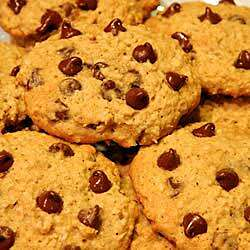

Oatmeal Chocolate Chip Cookies

Description
Chewy oatmeal chocolate chip cookies. Treat yourself to a batch of these!
Ingredients
- 3 cups rolled oats
- 1 cup milk
- 2 cups all-purpose flour
- 1 teaspoon baking soda
- 1 teaspoon salt
- 1 cup margarine
- 1 cup packed brown sugar
- ½ cup white sugar
- 2 eggs
- 1 teaspoon vanilla extract
- 1 cup semisweet chocolate chips
Steps
- Preheat oven to 350 degrees F (175 degrees C). Soak the rolled oats in the milk for at least ten minutes.
- Sift together the flour, baking soda and salt, set aside. In a medium bowl, cream together the margarine, brown sugar and white sugar. Stir in the eggs and vanilla. Add the sifted ingredients, and mix well. Then stir in the oat mixture and chocolate chips.
- Drop dough by heaping spoonfuls onto the prepared cookie sheets. Bake for 12 to 15 minutes in the preheated oven, until cookies are golden brown. Cool on baking sheets or remove to cool on wire racks.